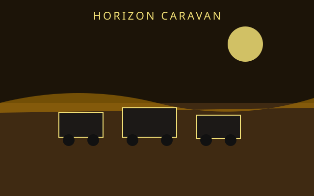

/// RAPID JUMP:
STATUS: ARCHIVE VERIFIED |
CLEARANCE: LEVEL-4 OVERSIGHT |
PROTOCOL: REVERIE DIRECTORATE
ARTICLE
DISCUSSION
SOURCE
HISTORY
YEAR 4,238 · DAWN OF HOPE
FACTIONS & GUILDS RECORD
The Horizon Caravan Guild
Contents
“The road is not a line out of the city. It is the city learning it has an edge.”

Company 3 — Year 4238 (Parallel to Dawn Initiative)
"The city thinks it is the world. It is not. The world is larger than any city. And someone has to cross it."
Overview
Year: 4238 (parallel to Dawn Initiative)
Setting: Somnarak, Cheonbulok, Mugeukji, The Desolate
Company: The Horizon Caravan (지평선 대 — Jipyeongseon Dae)
Protagonist: Kael (카엘) — the Drift King
Vehicle: The Drift Throne — a mobile platform that follows Han-flow lines
Game Style: The Frontier Expedition Company — Bus Travel, Urban Threat Levels, Identity Variants
The Absolvohan has activated. The Hand of Hope has opened. 15% of sorrow has transformed.
But the cities are still isolated. Somnarak does not know Cheonbulok. Cheonbulok does not know Mugeukji. Mugeukji does not know anyone.
The Horizon Caravan is born — a journey between cities, through the Desolate, across the planet. Kael — the Drift King, ruler of the nomads — leads the Caravan.
The Caravan connects Somnarak and Cheonbulok — but Mugeukji remains isolated. The Silence holds.
I. The Horizon Caravan (지평선 대 — Jipyeongseon Dae)
What It Is
The Horizon Caravan is a mobile operation — a journey between cities, through the Desolate, across the planet. The Caravan is not a company. The Caravan is a pilgrimage.
Vehicle: The Drift Throne — Kael's mobile platform, expanded into a caravan. The Throne follows Han-flow lines, seeking the paths where sorrow flows strongest.
Route:
- Somnarak — departure point, gathering supplies, recruiting travelers
- The Desolate — crossing the wilderness, facing Han-storms, meeting nomads
- Cheonbulok — arrival at the City of Rages, confronting the Furnace
- The Desolate — return crossing, facing new dangers
- Somnarak — return with Cheonbulok refugees, establishing trade
Mugeukji: The Caravan attempts to reach Mugeukji — but the Silence holds. The Void's suppression field is too strong. The Caravan cannot penetrate the Silence. Mugeukji remains isolated.
II. Kael — The Protagonist
Who He Is
Kael is the Drift King — the unofficial leader of the Desolate nomads. He rules from a mobile throne that follows Han flows. He has never entered Somnarak. He rules the Desolate's black market.
Origin: Kael was a Warden — once, long ago. He served in Zone E, patrolling the border. One night, he walked past the border — into the Desolate. The Han hit him like a wall. He did not Fracture. He changed. The Han seeped into him — not destroying, but transforming.
The Sorrow: Kael was exiled from Somnarak decades ago — for a crime he says he didn't commit. He built a kingdom in the wilderness. He has never forgiven the city.
The Question: "If the city threw me away, why do I still protect its borders?"
The Journey
Kael leads the Horizon Caravan — traveling between cities, through the Desolate, across the planet. He seeks to connect the cities — to establish trade, to share knowledge, to build bridges.
But the journey is dangerous. The Desolate is wild. Cheonbulok is hostile. Mugeukji is silent.
Kael faces Urban Threat Levels — dangers that increase as the Caravan approaches each city. He confronts the Furnace's rage. He navigates the Void's silence. He crosses the Desolate's sorrow.
III. The Drift Throne — The Vehicle
What It Is
The Drift Throne is Kael's mobile platform — expanded into a caravan. The Throne follows Han-flow lines, seeking the paths where sorrow flows strongest.
Appearance:
- A platform — massive, ancient, made of crystallized Outside Sorrow
- The Throne glows faintly — pulsing with the Han-flow beneath
- The Throne moves — following the Desolate's sorrow-lines
- The Throne is alive — the nomads who ride it feel the Han's guidance
Structure:
- The Throne — Kael's seat, at the center of the platform
- The Deck — where travelers gather, trade, rest
- The Hold — where supplies, cargo, and Echoes are stored
- The Helm — where Kael navigates, following the Han-flow
The Crew
| Member | Role | Origin |
|---|---|---|
| Kael | Captain | Drift King, former Warden |
| The Nomads | Crew | Desolate wanderers, Han-readers |
| Hwaran | Guide | Furnace Refugee — knows Cheonbulok |
| The Travelers | Passengers | Citizens seeking passage between cities |
IV. Urban Threat Levels
What They Are
Urban Threat Levels are dangers that increase as the Caravan approaches each city. The closer to a city, the higher the threat.
| Level | Threat | Description |
|---|---|---|
| Level 1 | Low | Desolate outskirts — minor Han-storms, wild entities |
| Level 2 | Moderate | Desolate interior — Han-storms, nomad encounters, Scar proximity |
| Level 3 | High | City outskirts — city defenses, patrols, border guards |
| Level 4 | Critical | City interior — faction conflicts, entity breaches, political danger |
Threat Types
| City | Threat | Description |
|---|---|---|
| Somnarak | Political | Council opposition, Warden patrols, faction conflicts |
| Cheonbulok | Physical | Furnace rage, Battle Pits, citizen hostility |
| Mugeukji | Emotional | Void suppression, Silence entities, emotional vacuum |
| The Desolate | Environmental | Han-storms, wild entities, ground instability |
V. The Journey — Arc by Arc
Arc 1: Departure (Year 4238, Month 1)
Location: Somnarak — Zone E, the Exile's Gate
The Mission: Kael enters Somnarak for the first time — seeking permission to lead a caravan to Cheonbulok. The Council is suspicious. The Wardens are hostile. The citizens are curious.
The Discovery: Kael discovers that Somnarak has changed — the Absolvohan has activated, 15% of sorrow has transformed, Hope Entities exist. The city is healing — but slowly.
The Threat: Level 3 — Council opposition. The Council does not trust Kael. The Council does not want the cities connected. The Council fears what Cheonbulok might bring.
The Outcome: Kael receives permission — reluctantly. The Caravan departs.
Arc 2: The Desolate Crossing (Year 4238, Month 2-3)
Location: The Desolate — from Somnarak to Cheonbulok
The Mission: The Caravan crosses the Desolate — facing Han-storms, wild entities, ground instability. Kael navigates using the Han-flow lines — following the planet's sorrow toward Cheonbulok.
The Discovery: The Desolate is changing — the Han-storms are more frequent, the entities are more active, the ground is less stable. The planet is... agitated.
The Threat: Level 2 — Environmental. Han-storms, wild entities, Scar proximity.
The Outcome: The Caravan survives the crossing — but barely. The Desolate is more dangerous than Kael remembers.
Arc 3: Arrival at Cheonbulok (Year 4238, Month 4)
Location: Cheonbulok — The City of a Thousand Rages
The Mission: The Caravan arrives at Cheonbulok — the city of fire, the city of rage. Kael seeks to establish trade, to share knowledge, to build a bridge.
The Discovery: Cheonbulok is dying. The Furnace is cracking. The citizens are raging. The city is burning out. The Furnace Keeper (Bulhwa) is desperate. The Last Elder (Gwansik) is mourning. The Ash Walkers are fleeing.
The Threat: Level 4 — Physical. Furnace rage, Battle Pits, citizen hostility. The citizens do not trust outsiders. The Furnace does not trust anyone.
The Outcome: Kael establishes contact — but not trust. The Caravan trades with Cheonbulok — supplies for rage-crystal, knowledge for fury. But the city is hostile. The Furnace is cracking. The rage is fading.
Arc 4: The Furnace's Secret (Year 4238, Month 5)
Location: Cheonbulok — The Furnace
The Mission: Kael enters the Furnace — seeking to understand why it is cracking. Bulhwa (the Furnace Keeper) guides him — showing him the rage, the fire, the fury.
The Discovery: The Furnace is not cracking from age. The Furnace is cracking from grief. The citizens are not raging — they are mourning. The rage was always grief — grief for the city that died, grief for the families that were lost, grief for the life that was never lived.
The Threat: Level 4 — Emotional. The Furnace's grief is overwhelming. Kael feels the weight of a city's sorrow.
The Outcome: Kael understands. Cheonbulok does not need trade. Cheonbulok needs healing. The Caravan cannot provide that. The Dawn Initiative might.
Arc 5: The Return (Year 4238, Month 6-7)
Location: The Desolate — from Cheonbulok to Somnarak
The Mission: The Caravan returns to Somnarak — carrying Cheonbulok refugees, carrying knowledge, carrying hope.
The Discovery: The Desolate is changing again — the Han-storms are less frequent, the entities are calmer, the ground is more stable. The planet is... healing. Slowly.
The Threat: Level 2 — Environmental. But less dangerous than before. The Desolate is responding to the Hand of Hope.
The Outcome: The Caravan returns to Somnarak — with refugees, with knowledge, with a bridge between cities.
Arc 6: The Mugeukji Attempt (Year 4238, Month 8)
Location: The Desolate — approaching Mugeukji
The Mission: Kael attempts to reach Mugeukji — the City of Absolute Silence. The Caravan approaches from the Desolate — seeking to connect the third city.
The Discovery: Mugeukji is... silent. The Void's suppression field is absolute. The Caravan cannot penetrate the Silence. The closer they get, the less they feel. The Han-flow lines stop at Mugeukji's border — as if the city has severed itself from the planet.
The Threat: Level 4 — Emotional. The Void's suppression is overwhelming. The Caravan's crew begins to lose feeling — emotions draining, memories fading, identity dissolving.
The Outcome: The Caravan retreats. Mugeukji remains isolated. The Silence holds.
Kael: "We cannot reach them. The Silence is too strong. The Void is too absolute. Mugeukji has cut itself off from the world — and from the world's sorrow."
Hwaran: "Then we leave them. We connect what we can. We heal what we can. We hope what we can."
Kael: "And the rest?"
Hwaran: "The rest is for another company. Another journey. Another hope."
VI. The Ending — Partial Success
The Horizon Caravan achieves partial success:
Connected:
- Somnarak ↔ Cheonbulok — trade established, refugees exchanged, bridge built
Not Connected:
- Mugeukji — remains isolated, the Silence holds
The Outcome:
- Cheonbulok refugees arrive in Somnarak — joining the Dawn Initiative
- Trade routes established — rage-crystal for Han-crystal
- Knowledge shared — Cheonbulok's Furnace technology, Somnarak's containment systems
- Hope increased — the cities are no longer alone
But:
- Mugeukji remains silent — the Void suppresses all connection
- Cheonbulok is still dying — the Furnace still cracks
- The planet still sorrows — Han still flows
The Caravan has connected two cities. The third remains isolated. The journey continues...
VII. PM Elements Used
| PM Game | Element | How Used |
|---|---|---|
| The Frontier Expedition | Bus Mechanic | The Drift Throne — mobile base |
| The Frontier Expedition | Urban Threat Levels | Danger increases near cities |
| LoR | District Exploration | Traveling between cities |
| LC | Facility Management | Managing the Caravan's supplies |
VIII. Timeline
| Year | Event |
|---|---|
| 4232+1778 | Absolvohan activates (15%) |
| 4233 | Memory Archive — Seiyon's story |
| 4238 | Horizon Caravan — Kael's journey |
| 4238 | Dawn Initiative — parallel operation |
| 4247 | Dawn achieves 45% |
"The city thinks it is the world. It is not. The world is larger than any city. And someone has to cross it."
— Kael, the Drift King, Year 4238
CANONICAL CROSS-LINKS & ATLAS CONNECTIONS